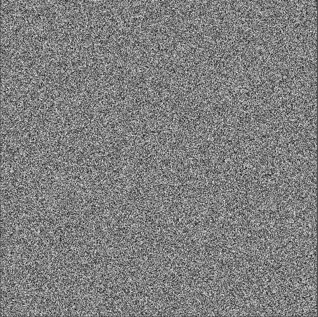
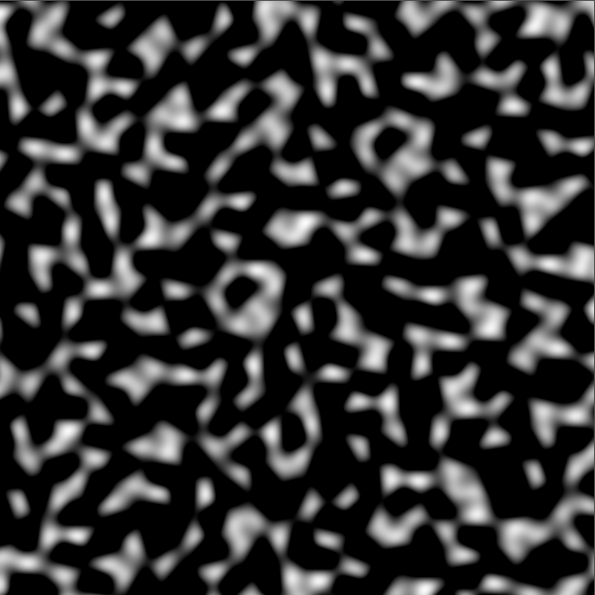
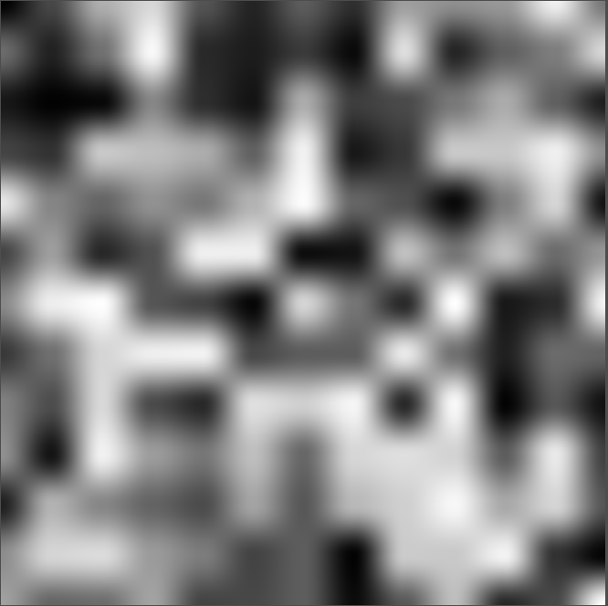
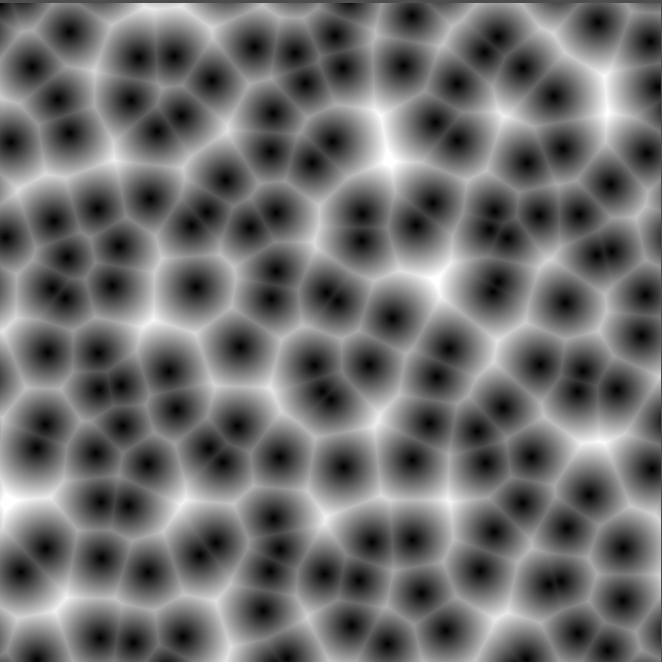

float randomValue(float2 p)
{
// Dot product with arbitrary constants + sin for randomness
float h = dot(p, float2(127.1, 311.7));
return frac(sin(h) * 43758.5453123);
}

float2 mod289(float2 x) { return x - floor(x / 289.0) * 289.0; }
float3 mod289(float3 x) { return x - floor(x / 289.0) * 289.0; }
float3 permute(float3 x) { return mod289((x * 34.0 + 1.0) * x); }
float simplexNoise(float2 v)
{
const float4 C = float4(
0.211324865405187, // (3 - sqrt(3)) / 6
0.366025403784439, // 0.5 * (sqrt(3) - 1)
-0.577350269189626, // -1 + 2 * C.x
0.024390243902439 // 1 / 41
);
float2 i = floor(v + dot(v, C.yy));
float2 x0 = v - i + dot(i, C.xx);
float2 i1 = (x0.x > x0.y) ? float2(1.0, 0.0) : float2(0.0, 1.0);
float2 x1 = x0 - i1 + C.xx;
float2 x2 = x0 + C.zz;
i = mod289(i);
float3 p = permute(
permute(i.y + float3(0.0, i1.y, 1.0))
+ i.x + float3(0.0, i1.x, 1.0)
);
float3 m = max(0.5 - float3(
dot(x0, x0),
dot(x1, x1),
dot(x2, x2)
), 0.0);
m = m * m;
m = m * m;
float3 x = 2.0 * frac(p * C.www) - 1.0;
float3 h = abs(x) - 0.5;
float3 ox = floor(x + 0.5);
float3 a0 = x - ox;
m *= 1.79284291400159 - 0.85373472095314 * (a0 * a0 + h * h);
float3 g;
g.x = a0.x * x0.x + h.x * x0.y;
g.y = a0.y * x1.x + h.y * x1.y;
g.z = a0.z * x2.x + h.z * x2.y;
return 130.0 * dot(m, g);
}

float hash(float2 p)
{
p = frac(p * float2(123.34, 456.21));
p += dot(p, p + 78.233);
return frac(p.x * p.y);
}
float2 smoothstep2(float2 t)
{
return t * t * (3.0 - 2.0 * t);
}
float valueNoise(float2 uv)
{
// Grid cell coordinates
float2 i = floor(uv);
float2 f = frac(uv);
float2 u = smoothstep2(f);
// Random values at the four corners
float a = hash(i);
float b = hash(i + float2(1.0, 0.0));
float c = hash(i + float2(0.0, 1.0));
float d = hash(i + float2(1.0, 1.0));
// Bilinear interpolation
float lerpX1 = lerp(a, b, u.x);
float lerpX2 = lerp(c, d, u.x);
float result = lerp(lerpX1, lerpX2, u.y);
return result;
}

float2 hash2(float2 p)
{
p = float2(
dot(p, float2(127.1, 311.7)),
dot(p, float2(269.5, 183.3))
);
return frac(sin(p) * 43758.5453);
}
float voronoi(float2 uv)
{
float2 i = floor(uv);
float2 f = frac(uv);
float minDist = 1.0;
for (int y = -1; y <= 1; y++)
{
for (int x = -1; x <= 1; x++)
{
float2 neighbor = float2(x, y);
float2 pos = hash2(i + neighbor);
float2 diff = neighbor + pos - f;
float dist = length(diff);
minDist = min(minDist, dist);
}
}
return minDist; // typically in [0, ~1.4]
}
Check here for some additional formulae